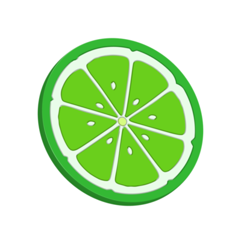
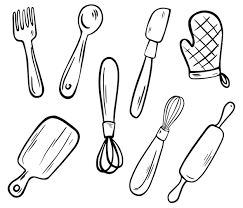

Key Lime Pie
Ingredienser:
25 g smör
150 g digestivekex
2 dl sötad kondenserad mjölk
3 - 4 msk färskpressad limejuice
1/2 msk finrivet limeskal (+ extra till garnering)
2 dl vispgrädde
Instruktioner:
Smält smöret. Mixa kexen med smöret till ett smul i en matberedare.
Vispa ihop kondenserad mjölk, limejuice och -skal till en kräm. Vispa grädden.
Lägg smulorna i botten på 4-6 glas (för 4-6 port) och fyll på med krämen och rädden. Toppa med limeskal.

Fakta:
- Amerikansk Efterrätt -
-Tar ca 30 min -
- 4-6 Portioner -
- Recept taget från ICA -